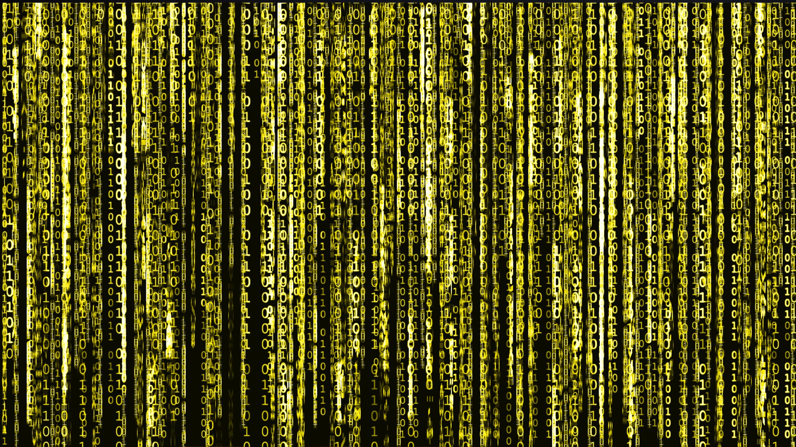

Dipublikasikan: 12 Juli 2025
Dalam era digital saat ini, pengembangan frontend menjadi salah satu keterampilan yang sangat dibutuhkan. Mulailah dengan memahami HTML, CSS, dan JavaScript, lalu lanjutkan ke framework modern seperti React, Vue, atau Angular.
Banyak sumber belajar tersedia, mulai dari dokumentasi resmi, kursus interaktif, hingga proyek open source. Fokus pada praktik langsung dan buat portofolio nyata untuk meningkatkan skill kamu.
Dengan dedikasi dan latihan rutin, kamu akan siap menjadi frontend developer handal yang dicari industri teknologi masa depan.